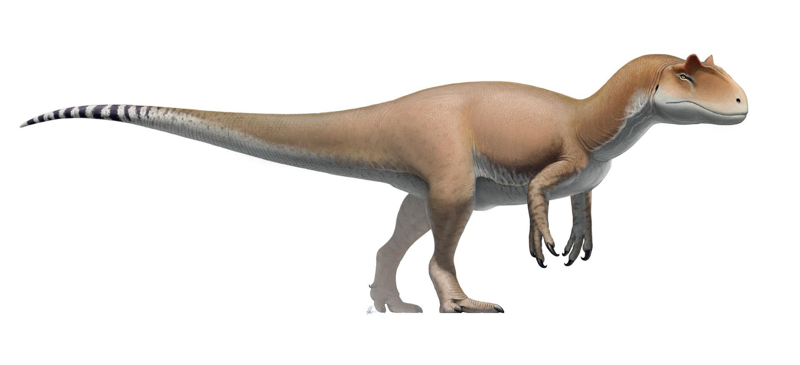

Allosaurus fragilis
Meaning: "Different lizard"
Described by: Othniel Charles Marsh (1877)

Restoration of Allosaurus fragilis in its natural habitat.
Quick Facts
Formation:
Morrison Formation
Period:
Late Jurassic (~155–145 Ma)
Location:
Utah, Colorado, Wyoming (USA)
Estimated Length:
8.5–12 meters
Estimated Weight:
1.5–2 tonnes
Description
Allosaurus fragilis was one of the dominant predators of the Late Jurassic of North America. Known for its large skull, recurved serrated teeth, and three-fingered hands, it occupied the apex predator niche of its ecosystem, preying upon contemporaneous sauropods and ornithopods.
Specimens & Discoveries
The holotype specimen was discovered in the Morrison Formation of Colorado in 1877. Additional fossils have been found across Utah and Wyoming, making it one of the most completely known theropods of its time.